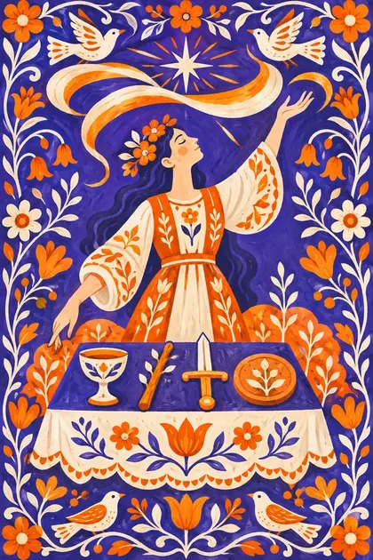
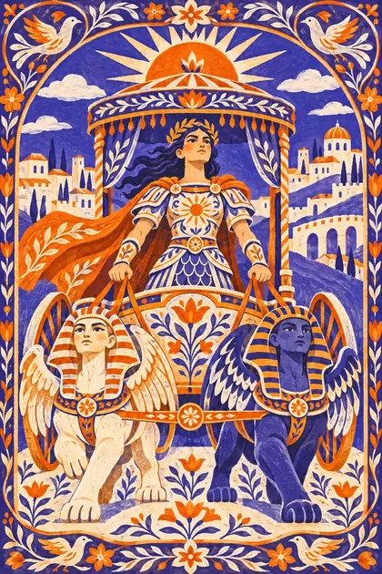
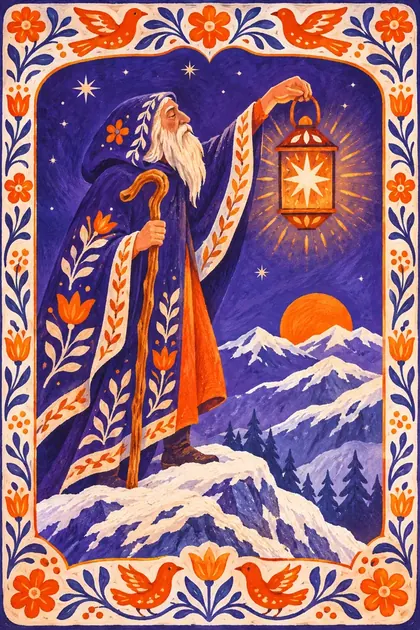
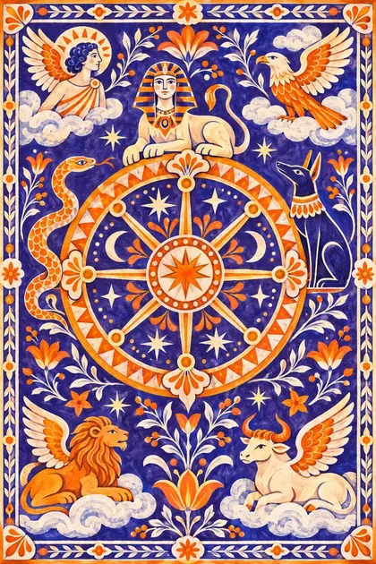
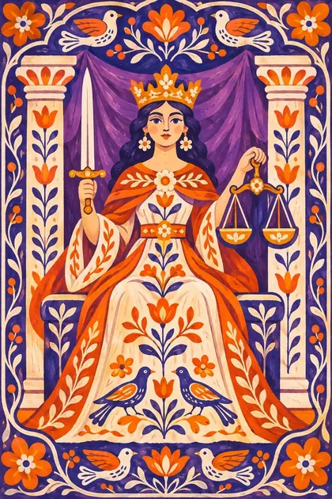
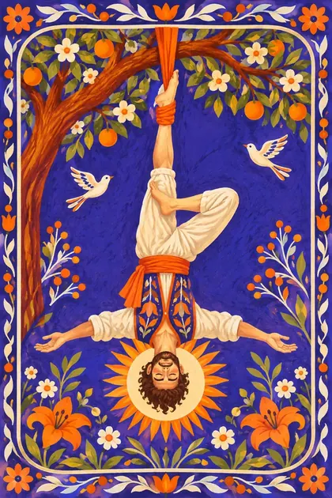
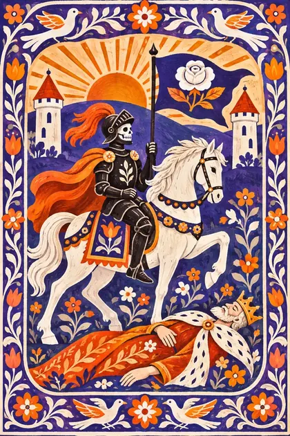
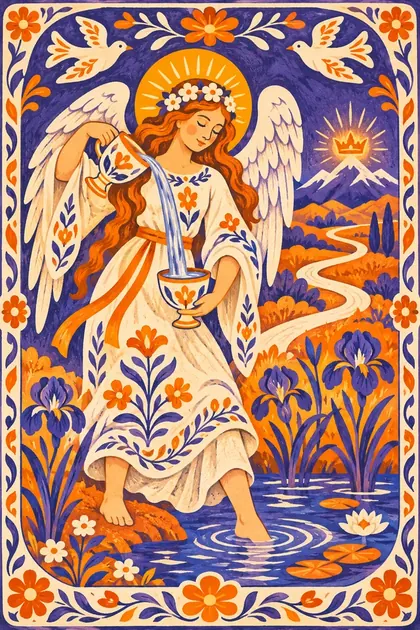
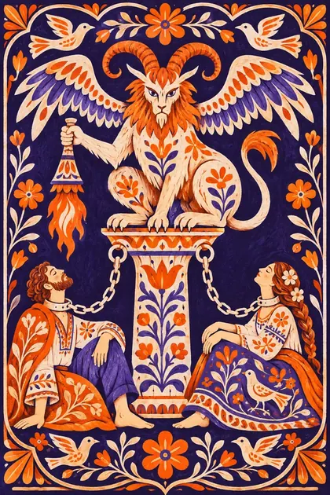
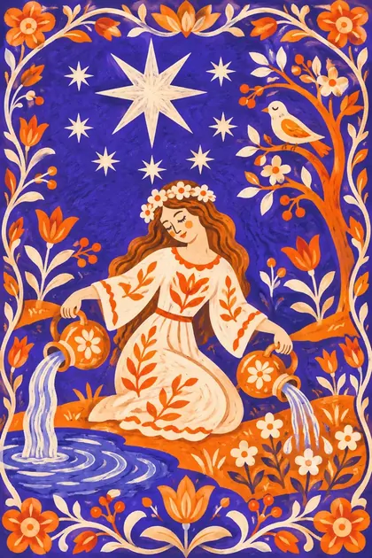

Verified ratings help you choose a psychic; a free reading helps you decide what to ask. Use this tool from Verified Psychic Ratings to try a classic six-card tarot spread. Shuffle the twenty-two Major Arcana, choose six cards, and read what each position says about you, your wishes, your worries and your next steps. The wording is practical rather than mystical, and your question is never recorded or sent.
L
Linden
Hi, I am Linden. Take a breath and think of a question, or simply stay open. When you are ready, press “Shuffle”.
It stays in your browser and is only shown back to you in the result.
For entertainment and self-reflection.
Using the spread to shape your questions
Pick a topicChoose one area, such as work, love or a decision, and shuffle with that in mind.
Draw six cardsTap six face-down cards. Tap a chosen card again if you want to replace it.
Note your follow-upsEach card is revealed with a short reading. Open any card, and jot down the questions it raises for you.
The six positions
How you see yourself now. The picture of yourself you are carrying into this question.
What you truly want. The wish beneath the practical goals.
What you fear. The worry that quietly shapes your choices.
What works in your favour. A strength or support you can lean on.
What stands in your way. The obstacle, whether outside you or inside.
Where this is heading. The direction of travel if you carry on as you are.
Question prompts for all 22 Major Arcana cards
A good reading starts with a good question. For each trump card below, you will find what it stands for and a sample question it can help you ask, whether you are reflecting alone or preparing for a session with a professional.
Theme: beginnings and trust. The Fool encourages a leap into something new. Try asking, what would I begin if I were not worried about looking foolish? Pair the answer with a practical check of what you would need before taking that first step.

The Magician
Focused will · Skill and resourcefulness · Manifestation · Clear intention
Theme: skill and intention. The Magician says your tools are available. Ask yourself, which one goal deserves my full attention this month? The question turns the card from a vague boost into a clear priority and a first action.
Theme: intuition and the unspoken. The High Priestess favours quiet observation. Try asking, what do I already sense that I have not admitted? Give the answer time, and notice whether it holds steady when you stop searching for proof.
Theme: nurture and growth. The Empress speaks of creativity and care. Ask, what in my life needs patient attention, and am I including myself? The question helps convert abundance from a vague wish into daily habits of kindness.
The Emperor
Structure · Authority · Stability · Leadership
Theme: order and authority. The Emperor stands for structure. Ask, which boundary or routine would make my situation steadier? It also invites a second question about rigidity: where is my control protecting me, and where is it getting in my way?
Theme: tradition and mentorship. The Hierophant points to established paths. Ask, whose guidance would genuinely help me, and which inherited rule am I following without thinking? Both answers give you clear information about what to keep and what to revisit.
The Lovers
Choice and alignment · Deep connection · Shared values · Union
Theme: values and choice. The Lovers sits behind many big decisions. Ask, which option am I able to defend honestly in a year? The question moves the card beyond romance and into the principle of choosing what matches your values.

The Chariot
Determination · Self-mastery · Forward momentum · Victory through effort
Theme: drive and direction. The Chariot reflects focused effort. Ask, what am I steering toward, and which competing pull needs managing? Naming the destination and the distraction together gives the card's energy somewhere useful to go.
Theme: gentle courage. Strength favours patience over force. Ask, how can I respond to this difficulty with steadiness rather than pressure? The answer usually involves compassion for yourself first, followed by a calm, persistent next step.

The Hermit
Solitude · Inner guidance · Reflection · Wisdom
Theme: reflection and solitude. The Hermit suggests stepping back. Ask, what would I decide if nobody else's opinion mattered? Spend a little time with that question, then check whether you are seeking quiet or avoiding something.

Wheel of Fortune
Cycles and change · Turning point · Fortune · Fate and timing
Theme: cycles and timing. The Wheel marks a turning point. Ask, what is changing that I cannot control, and what remains mine to decide? This question keeps attention on practical choices while accepting that circumstances rotate on their own schedule.

Justice
Fairness and balance · Accountability · Clear-eyed truth · Cause and effect
Theme: fairness and consequence. Justice calls for honest accounting. Ask, what would a fair, unbiased view of this situation conclude? It is a good question for contracts, commitments and any dispute where emotion has clouded the facts.

The Hanged Man
Pause and surrender · New perspective · Letting go of control · Voluntary sacrifice
Theme: pause and perspective. The Hanged Man suggests stopping the struggle. Ask, what might I see if I looked at this from the opposite side? The question loosens a stuck situation without demanding that you act before you are ready.

Death
Endings and transformation · Letting go · Clearing the old · Necessary change
Theme: endings and renewal. Death represents transformation. Ask, what has finished that I am still carrying, and what would I make room for? It reframes the card from something feared to a practical question about clearing space.

Temperance
Balance and moderation · Patience · Blending opposites · Healing and harmony
Theme: balance and patience. Temperance blends opposites. Ask, which part of my life is out of proportion, and what small adjustment would help? Gradual, repeated changes tend to match this card better than a dramatic overhaul.

The Devil
Attachment and bondage · Temptation · Unhealthy patterns · Shadow side
Theme: attachment and habit. The Devil points to what holds on. Ask, what do I keep returning to that costs me more than it gives? Because the chains are loose, the follow-up is simple: what is one small step toward loosening them?
Theme: upheaval and truth. The Tower marks sudden change. Ask, what has this disruption exposed that was already unstable? Then ask, what would a sturdier foundation look like? Both questions keep attention on rebuilding rather than on the shock itself.

The Star
Hope and renewal · Healing · Inspiration · Serenity
Theme: hope and recovery. The Star offers calm after strain. Ask, what is helping me heal, and how can I do more of it? The question grounds the card's optimism in specific sources of support in your own life.
The Moon
Illusion and uncertainty · Intuition · Subconscious fears · Dreams
Theme: uncertainty and imagination. The Moon blurs the view. Ask, which of my worries can I check against facts, and which should wait? Separating the verifiable from the speculative is the card's most practical gift.
The Sun
Joy and vitality · Clarity and success · Warmth · Confidence
Theme: clarity and joy. The Sun brings things into the light. Ask, what is genuinely going well, and how can I appreciate it fully? The question keeps the card honest, avoiding general cheerfulness in favour of naming real strengths.
Judgement
Awakening and calling · Reckoning · Renewal · Self-forgiveness
Theme: awakening and forgiveness. Judgement invites a review. Ask, what am I ready to forgive, and what calling keeps returning? The question turns the card from a verdict into a decision about the next chapter.
Theme: completion and integration. The World marks a finished cycle. Ask, what have I accomplished, and what comes next? Taking the time to acknowledge the first half of the question makes the second half feel steadier and more purposeful.
Free tarot reading FAQ
How can this spread help me choose what to ask?
Each card brings a theme to the surface, such as change, patience or choice. Noticing which themes resonate helps you turn a vague worry into a specific question. That is useful whether you keep reflecting alone or later speak with a professional reader. Many people jot down the questions that come up while reading their spread, then refine them into one or two clear sentences before any further step.
What makes a question work well for tarot?
Open, specific questions work best, for example what should I understand about this change, rather than will this happen. They invite interpretation instead of a fixed answer. Questions about your own choices and feelings generally produce more helpful readings than questions about other people. Questions about your own actions, feelings and options give the cards more to work with, and tend to leave you with practical ideas instead of vague impressions.
Is my question stored or checked?
No. It remains in your browser and is displayed only in your own result. We do not store, review or transmit it, and refreshing the page deletes it. You are free to write exactly what you wish without any record being kept. You can type different versions of a question across several spreads and compare how the themes change, which is a simple way to sharpen what you actually want to know.
Can the tool verify a reader or predict outcomes?
No. It cannot verify any person and does not forecast events. The spread is an entertainment and self-reflection exercise built on traditional imagery. For decisions with real consequences, rely on qualified professionals, and treat any card reading as just one perspective. Treat every answer as one viewpoint among many, and speak with a qualified professional for decisions involving health, money, legal matters or personal safety.
Ready for answers that fit your life?
The cards give you a thoughtful starting point. A live psychic can look at the full picture and talk through the details with you.